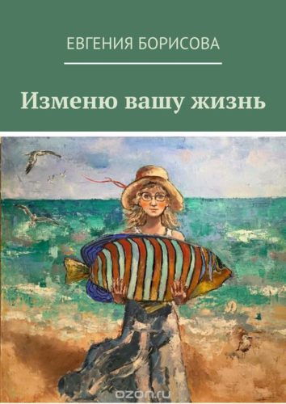

Бывает, смотришь на человека и думаешь: «вот этот — точно собирает марки, вот тот — переодевается в женское, а вот эта — любит действующего президента».
Когда я встречался с Евгенией Борисовой, я никогда не мог подумать, то она пишет книги. Узнал я это, как и большинство кемеровчан, когда первая повесть Жени начала продаваться в настоящих интернет-магазинах.
Я задал Жене несколько вопросов, в которых попробовал узнать, как люди становятся писателями.
Как ты дошла до жизни такой? Вернее, долго ли шла?
Долго шла. Лет с двенадцати. Именно в этом возрасте я начала писать рассказы и сразу повести. Мое первое произведение называлось «Лунная соната», оно было написано в двух тетрадках в линейку (с моими же иллюстрациями). Это была повесть про подростковую любовь, и, насколько я помню, была она просто пронизана символизмом. Я давала почитать одноклассницам, мама одной из них отксерила обе тетрадочки (а это был 1993 год!), и экземпляры были у всех моих подружек.
В 13 лет я написала рассказ, который начинался так: «Вчера умер человек, которого я любила и люблю. Он повесился от несчастной любви, но не ко мне».
Этот рассказ потом опубликовал журнал «После 12», это мне было уже 16 лет. И все меня спрашивали: как тебе, такой молоденькой шестнадцатилетней девочке, пришли в голову такие трагические мысли? А я написала его в 13 лет вообще☺. В старших классах я писала рассказы, участвовала в областных конкурсах юных поэтов и прозаиков, побеждала в них и всё такое. Так что путь мой долог, да.
Это твоё первое произведение?
На этот вопрос я ответила уже. Скажу лишь, что это моя первая законченная взрослая повесть. Есть несколько неоконченных. Пока я их писала, я теряла к ним интерес и забрасывала. Рассказы писать не переставала, но в стол.
Почему детектив, почему не любовный роман, например?
Я сама в шоке, что это не любовный роман, честно. А что это детектив, для меня тоже стало неожиданностью, я для себя так этот текст не называла. Но одним из первых читателей был Георгий Демин, и он написал мне, что это же социальный детектив! И мне что-то так понравилось это определение, что я его присвоила своему тексту. Егор, спасибо☺ Но справедливости ради надо сказать, что он и любовный частично тоже. Причем, это очень значительная часть.
Как происходило написание? Ты заставляла себя писать ежедневно или делала это по настроению? Писала сама или, может быть, диктовала секретарю?
Про секретаря – смешно☺ Я бы не смогла диктовать, я с текстом работаю долго. Это как у Бегбедера есть в его «Любовь живет три года» такой фрагмент, где герой несколько часов придумывал всего одну фразу: «Неотвратимо светило солнце». Вот и у меня некоторые куски писались сразу и быстро, а некоторые я вытаскивала клещами по предложению, потом еще многократно переделывая.
Идея «Изменю вашу жизнь» пришла почти 4 года назад. Причем, с названия. И вот 3,5 года я писала этот текст. В основном, по ночам. По настроению – то главу за ночь, то по нескольку месяцев не открывала документ. Или, бывает, открою, почитаю, найду пару ошибок – исправлю, два-три слова допишу – и закрываю. Если бы не конкурс «Новая книга», который проводил Дом литераторов Кузбасса в конце прошлого года, я бы не дописала ее, наверное. Я узнала, что будет конкурс, моя одноклассница Таня Ильдимирова рассказала в своем фейсбуке. Я взяла отпуск на неделю, и несколько дней подряд сидела – писала и правила. За три дня до конца приема текстов на конкурс закончила и отправила. Чего мне в жизни не хватает, так этого мотивации. Иногда эту мотивацию называют «волшебный пендель».
На момент начала написания сюжет сложился в голове полностью?
Нет. Только фабула. Просто я думала про этот сюжет три года, и постепенно он вырисовывался, обрастал героями и деталями. В процессе приходилось и переписывать отдельные куски текста, и выбрасывать фрагменты полностью.
В сюжете есть отсылки к реальным людям?
Это очень сложный вопрос. Потому что в моей голове мои герои давно живут как самостоятельные личности. Конечно, главная героиня говорит моим языком. Александр Винокуров сказал, что не может отделаться от моих интонаций в тексте. Только один герой почти полностью «содран» с реального человека. Но этот человек, скорее всего, никогда не прочитает мою книгу. Какие-то характерные черты других героев «надерганы» из знакомых. Наверное. Мне уже сложно сказать. Некоторые знакомые писали мне, что узнают себя. Мне каждый раз это удивительно.
Сколько ты зарабатываешь с каждой книги? Или ты продала свои права издателю?
Сервис Ridero
Нет, мои права при мне. Я опубликовала книгу через сервис Ridero. Это своего рода эксперимент в каждом шаге. Дом литераторов Кузбасса обещал опубликовать «Изменю вашу жизнь» в качестве главного приза за победу в конкурсе «Новая книга». Я жду бумажную версию. А с помощью этого сервиса я запустила электронную книгу сама. Когда я ее публиковала и заключала договор с издательством, меня спросили, сколько я хотела бы получать за каждый проданный электронный экземпляр. Я написала, что 100 рублей. Тут же калькулятор посчитал мне, что в интернет-магазине книга будет стоить больше 300 рублей. Я подумала, что за такую цену никто не купит, и поставила ценник в 80 руб. Так что с каждого проданного экземпляра у меня будет целых 80 рублей! Ценообразование там достаточно сложное. Но суть в том, что на цену издательства магазин накручивает еще 100%.
Кто читал книгу до того, как ее увидел издатель?
Мои подруги. Первые несколько глав прочитала подруга и одногруппница Света Майер. После ее критики я выкинула целый кусок из текста, и это была критика по делу. Несколько редакций с самого начала читала Ольга Редько, она мне очень помогала, расписывала плюсы и минусы, говорила, на что обратить внимание, а что – хорошо. Еще обсуждала я текст с моей московской подругой Таней Белецкой. И именно после разговора с ней я решила, что финал книги будет оптимистичным, насколько это возможно. Я переживала, что повесть получилась «девочковой». Поэтому, когда Егор Дёмин прочитал и сказал, что это текст «унисекс», я расслабилась, я ему верю☺ Хотя, конечно, он больше адресован женщинам.
Книгу кто-то корректировал?
Я сама ее корректировала. Есть такая фраза у корректоров: каждая найденная ошибка в тексте – предпоследняя. Поэтому и в итоговом тексте «Изменю вашу жизнь» встречаются опечатки, да. Когда мне про них пишут, я исправляю в тексте.
Как ты нашла издателя?
Сервис Ridero попался мне в рекламе на фейсбуке. Так и нашла. Я несколько дней изучала их сайт, отзывы в сети искала, спрашивала по знакомым. Резюме было такое: «Хорошие сапоги, надо брать».
Откуда такая обложка?
Обложка к содержанию не имеет никакого отношения, она даже дезориентирует. Но просто я уже давно наблюдаю за живописью Арины Федчиной, и внезапно пришла в голову мысль попросить у нее картину для обложки. Арина сказала – выбирай! И я выбрала ту картину, которая непосредственно с текстом не связана, но связана с названием и общим смыслом. Многие из нас надеются на «золотую рыбку». Вот об этом и книжка, и обложка.
Тебе доступна статистика покупок?
Да, доступна. Пока на странице со статистикой фраза: «Данных о продажах в систему не поступало». Поэтому я пока не знаю, куплен хоть один экземпляр. Но на самом деле, для меня важнее, что прочитали или прочитают мои друзья и знакомые. И родители, конечно.
Уже начала следующую? Когда планируешь в печать?
Пока пишу цикл рассказов. Цикл маленький, рассказы тоже небольшие. Ничего большого пока не планирую, если честно. Жду, когда придет какая-нибудь такая идея, которой можно будет посвятить еще 4 года жизни.

«Изменю вашу жизнь» — это легкий, но не легкомысленный социальный детектив. Журналистка провинциального издания размещает объявление с обещанием изменить жизнь незнакомых ей людей. Можно ли изменить жизнь человека без его желания, как исправить то, без чего не представляешь себя, — вот вопросы, на которые ей предстоит ответить. Как изменит смелый эксперимент ее собственную жизнь — вот то, что ей предстоит узнать.